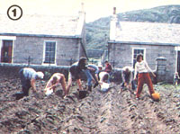
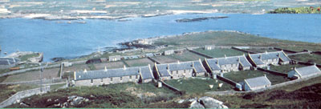
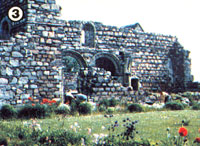
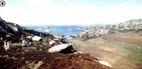
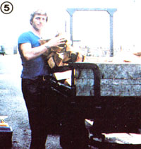
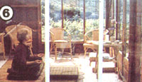
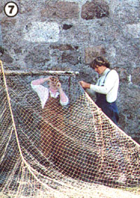
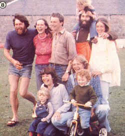

"I invite you to come and share my life . . . and you can't ask for much more than that."
(an Erraid resident)
STAFF PHOTO
During MOTHER's tour to Findhorn last spring, we accepted a gracious invitation, from the folks at the Erraid community, to share their island lifestyle for a week. And, a few days after our arrival, our hosts laughingly admitted that the thought of having 20 American strangers invade their remote, tranquil domain had initially been "quite terrifying".
Not that Erraid's residents are unused to visitors . . . after all-in addition to caretaking this island off the northwest coast of Scotland for its Dutch owners-they run a guest program in connection with the Findhorn Foundation. (See "Findhorn: A Bright Light in a Dark World", MOTHER NO. 71, page 32.) But the Erraid community consists of only eight adults and four children . . . and they'd never had a large tour group drop in on them before.
In fact, we filled their accommodations to capacity, since-in addition to a few out-buildings-there are only ten row houses on the whole island, one of which has been converted into a community kitchen and dining room. (These sturdy stone structures were built, over a century ago, with granite from Erraid's own quarry . . . under the direction of Robert Louis Stevenson's father, Thomas Stevenson, who was a lighthouse and harbor engineer.) But despite their initial trepidation, the Erraid "family" members welcomed us into their comfortable old homes and-in the Findhorn tradition-into their hearts as well.
MOTHER'S travelers, on the other hand, had very much looked forward to this unique visit. During the previous full and busy week at Findhorn, we'd become a close-knit, happy group and were ready for a little relaxation and free time. We'd been told that our stay on Erraid would be "unstructured", but only the most energetic among us questioned how we'd occupy ourselves for a whole week on an island that Stevenson had described (in Kidnapped) as "nothing but a jumble of granite rocks with heather in among". And as it turned out, filling our days with activities was never a problem.
A CAST OF CHARACTERS
Though Erraid does derive a portion of its cash income from the guest program, the community members also keep sheep, chickens, geese, and a couple of milk cows . . . sell some produce from five acres of walled gardens . . . fish the local waters . . . make and market candles . . . and pass the long, dark winter days with spinning, weaving, and other craft projects. If necessary, they could survive quite nicely on their own, but they've made a successful effort to become an integral part of the larger Inner Hebrides fishing/sheepherding community.
Back in the last century-when Erraid's lighthouse builders cut and fashioned its granite into "prefabricated" structures to be shipped to outlying islands, and each family had its own house and garden-survival, we're told, was quite difficult. Now, however, thanks in part to the shared work load and communal spirit, the island's residents enjoy a lifestyle that's admittedly busy, but comfortable and secure.
Large projects, such as rounding up the sheep for shearing, can involve the whole group, but each member also has a certain area of daily responsibility. Loren lends his considerable talents to cooking and candlemaking. His wife Mari devotes much of her energy to caring for her daughter Ona and infant son Teva . . . along with Luke and James, the sons of Giles and Clare. Giles, who's recovering from a back injury, currently shares that job with her. Clare and Dick take turns looking after the livestock and also oversee the community's wood and peat fuel supply. John keeps the boats and fishing gear in good repair. Lynda is in charge of the gardens, and Will-a carpenter-takes care of building maintenance.
All that was asked of us, however, was that we assist in cleaning up after meals and be sure to close the gates behind ourselves . . . "to keep the animals out and the children in". But MOTHER'S travelers saw immediately that their skills could be put to good use on Erraid, and soon found tasks to fit their talents and moods . . . turning our visit into what Mari later described as "the highlight of the season".
For example, Ellen from Alaska and "Min" from Minnesota shared their knowledge of gardening in northern climates. David, Neil, and Marisa cut and dried peat for winter fuel. John plugged up some of the buildings' energy leaks, checked on the beehives (he'd taken a beekeeping seminar at MOTHER'S Eco-Village the previous year), and sharpened tools. Jettie and Gloria seemed to delight in polishing windows, while Margaret and Tonia did more than their share of dishes. And we all helped weed the gardens, remove stones from the huge potato patch, and clean fishing nets . . . and frequently ganged up to produce gourmet vegetarian meals, freeing Loren for other tasks about the seagirt farm. At day's end, any aching muscles were soothed by Susan's acupressure massages and/or Shirley Mae's deep-muscle rubs.
And although work, especially when it's approached as "love in action", isn't very different from play in such places as Findhorn and Erraid . . . we still had-in that far northern part of the world, where the springtime sun comes up at 4:00 a.m. and sets at 10:00 p.m.-all the spare time we needed to roam the wild, rugged, windwashed island. Also, as luck would have it, the usually rainy climate gave way to rare blue skies and temperatures in the 80's. So we sunned on the pure white sands of Balfour Bay . . . swam in the clear, blue green waters of the North Sea . . . spent quiet, meditative times in the glass-enclosed sanctuary overlooking Iona Bay .. . climbed down the treacherous cliffs to explore Pigeon Cave . . . took Erraid's boat out for a sail . . . sank up to our knees in unsuspected peat bogs . . . marveled at the millions of tiny wildflowers (including bog orchids) that flung themselves across the bright green landscape, looking like illustrations in a children's book of fairy tales . . . and during the evenings played a game of darts, called "Killer", that grew more competitive and raucous with each mug of Erraid's homemade beer.
"IN IONA OF MY HEART"
Perhaps the high point of the visit occurred when the whole group was rowed over to the nearby island of Mull and then walked the mile or so past fields of wild yellow iris to Fionnphort, where we caught a ferry to the Isle of Iona . . . one of the most revered sites in Christendom. In 563 A.D.-as the Dark Ages descended on Western civilization-St. Columba, a remarkable Irish priest/warrior, established a monastery here from which Christianity spread throughout Britain and, eventually, to the rest of Europe as well. (There's reason to believe that the famous Book of Kells was the work of Iona's illustrators.) However, the island's ancient Gaelic name, Innis-nam-Druidbneach or "Island of the Druids", signifies that it was a Celtic spiritual center long before the birth of Christ. (Interestingly, Iona itself is far older than its neighboring islands. Its Precambrian rock dates back some 1,500 million years.)
We spent an entire day enjoying this ancient spiritual kingdom. We visited ruins and the restored abbey, a burial place of legendary kings of the north (including Macbeth) ... searched out great stone crosses (though only three of the original 360 survived the fury of the Scottish Reformation) . . . collected some of the amazing array of multicolored pebbles that grace Iona's shores . . . and thoroughly absorbed the energy that seemed to fill the air of this gentle "power center", whose light-down through the centuries-has sometimes flickered, but never died. (St. Columba himself wrote a song which prophesied: "In Iona of my heart, Iona of my love, instead of monks' voices shall be the lowing of cattle, but ere the world come to an end Iona shall be as it was.")
In the popular avant-garde movie My Dinner With Andre, such "pockets of light" as Iona, Findhorn, and-most certainly-Erraid were referred to as "islands of safety where history can be remembered and the human being can continue to function, in order to maintain the species through a Dark Age . . . to preserve the light, life, the culture". And the film goes on to suggest that as the world grows darker and colder, we can visit these centers to "refuel for what it is we have to do on the planet itself, and come back".
Refueling at Erraid can be a happy, memorable, and inspiring experience . . . "and you can't ask for much more than that".
EDITOR'S NOTE: If you'd like to experience life on Erraid, you can either join our second Findhorn tour next June (see page 70), or write (Accommodations, Isleof Erraid, Fionnphort P.O., Isleof Mull, Argyll PA 666 BN, Scotland) to arrange your own visit.
|
 |
 |
 |
|
 |
 |
 |
|
 |
 |
|